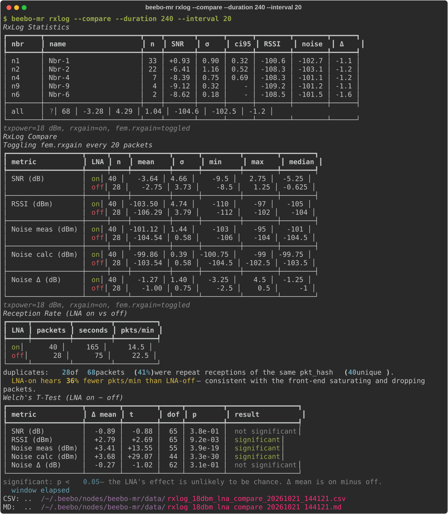
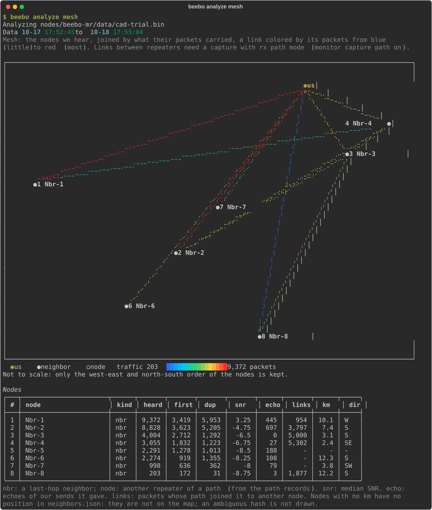

Analysis¶
Analysis works on the data the node records. beebo rxlog --compare compares the LNA on and off live over the companion link. beebo analyze reads a pulled monitor dataset offline and never connects to a device. For the health verdict of the live node see Health Check. Every command and option is listed in the CLI Reference.
In-Field LNA Comparison¶
The RX signal chain analysis in Board Analysis and the bench measurements in RF Experiments estimate the KCT8103L LNA's tradeoff (<role>.fem.rxgain) from datasheet parameters and lab equipment — a spectrum analyzer, a 50-ohm stub, a bandpass filter. That answers the question for one bench, once. It doesn't answer it for a specific deployment site, where the real question is whether the local RF environment is quiet enough for the LNA's ~6 dB of sensitivity over bypass to be worth its ~17 dB of reduced out-of-band tolerance — and that can only really be judged with the antenna connected, in place, listening to real traffic.
beebo rxlog --compare does exactly that, entirely over the companion link, with the chassis closed and no bench equipment at all:
$ gatto rxlog --compare
It listens to the node's live RX feed and automatically toggles the live role's fem.rxgain on/off every --interval packets (default 30) while packets keep arriving from ordinary mesh traffic — no synthetic test source is generated or required. Toggling by packet count rather than by a timer keeps the on/off sample sizes balanced regardless of how much traffic the node is actually seeing at that moment. Every captured packet is tagged with whichever LNA state was active when it arrived, and the run keeps cycling until at least 4 toggle cycles have completed and both groups' mean SNR has converged to --precision (95% CI half-width, default ±0.5 dB) — so a busy node with a lot of traffic finishes fast, and a quiet one just keeps sampling until the numbers are trustworthy. --duration forces a fixed window instead, and Ctrl-C stops it early at any point. Either way, the node's original LNA state is always restored automatically on exit.
At the end it reports, both on the console and (unless --no-csv) to a CSV + markdown sidecar under ~/.beebo/nodes/<node>/data/:
- a per-metric on/off comparison table (SNR/RSSI/noise floor — mean, σ, min, max, median for each LNA state),
- a Welch's t-test on SNR/RSSI between the two groups, with an explicit
p < 0.05significance verdict, so a difference can be told apart from ordinary traffic/propagation drift rather than eyeballed off two numbers, - a packets-per-minute reception rate for each LNA state, with a plain-language verdict — a lower LNA-on rate is flagged as the front-end saturating and dropping packets, a higher one as the LNA genuinely helping.

Because interleaving many short on/off windows over the same live session cancels out drift far better than one long bench sweep with the LNA on followed by one with it off, this in-field comparison is arguably a more representative answer for a given site than the bench numbers in RF Experiments — it is measuring the real deployment's actual RF environment and actual traffic pattern, not a lab bench's.
A saved CSV can be re-analyzed later without a device connection:
$ beebo rxlog --analyze ~/.beebo/nodes/gatto/data/rxlog_tx18_lna_compare_20260722-091500.csv
Retrospective Analysis (beebo analyze)¶
beebo analyze reads locally pulled data only, never a device. --dir names the root (default ~/.beebo/nodes, the layout monitor decode --save writes to). Run through a node alias (for example gatto analyze list) it only sees that node's own data; the bare beebo sees every node. A data set can be named right after analyze, before the report, so a command reads as English: gatto analyze trials rate (a monitor pull --to trials file, a day file such as monring_2026-09-28, or a saved set's tag), or given as a FILE after the report (a path relative to --dir; a bare name such as trials or trials.bin that is not a file there is looked up by name, so gatto analyze rate trials works too). Subcommands:
| Command | Reports |
|---|---|
analyze list |
The pulled monitor sets (per-profile CSV/JSON and the raw monring_<date>.bin days and --to named files) with basic stats |
analyze link-quality |
Per-neighbor SNR/RSSI summary and a mean ± std chart per metric; --hash/--name for one neighbor: statistics and distribution charts, --trend adds hourly charts. Optional SVG chart with --chart |
analyze neighbors |
Neighbor activity: node and packet counts and a packets-per-neighbor chart; --hourly adds packets by hour of day |
analyze noise |
Noise-floor statistics, distribution histogram and hourly trend |
analyze packets |
Search and filter individual rx/tx packets |
analyze rate |
RX/TX packets per minute: statistics and a time-series chart |
analyze latency |
Checks the time limits the node judges packets with against the captured traffic. A packet is duplicated when we already heard it; one we route is echoed when a neighbor relays it and we hear that relay within the echo window of our transmission. A Limits table gives the echo window (the firmware logs it with each verdict, 4500 ms + 6 x airtime), seen_window (a settings event in the capture, else the newest saved config of the alias, else the firmware default, or --seen-window SECONDS as a what-if) and --max-latency (default 100 s, a duplicate later than this after the first reception is a reused hash). Packet Statistics shows received (individual, duplicated, excluded as hash reuse) and routed packets: a 0-hop echo (the neighbor's own relay, heard straight from it), an n-hop echo (relayed on by more repeaters first) and a duplicate by another route, all in the echo window; any duplicate heard after the window within seen_window (outside window); and not heard, a neighbor stays silent when it already has the packet. The echoes are told from other routes by the RX record's path flags (monitor format 4, exact; an older capture falls back to the hop count, an upper bound). A duplicated section and an echoes section each give the delay table (n, p50, p90, p99, max in ms), a histogram with the limits as x ticks (the echo histogram stacks the 0-hop echoes under the n-hop ones), and a check table with a check mark or a cross: seen_window covers 99.9% of the duplicates and the dedup table holds a hash for it; the echo window covers 99% of the echoes, the echo ring holds a packet for it and never overflowed, with the recommended value and the fit of base + factor x airtime. A raw monring .bin carries the echo events; any other set gives the duplicated packets only. --detail adds the echo window table, the hop tables, the duplicate report and the slowest pairs; --json prints it as JSON. analyze timing and analyze dup-latency still work, one half each |
analyze routing |
Why a packet we route is, or is not, echoed by a neighbor, from the RX and TX records and the echo verdicts of a raw monring .bin. A table counts the routed packets by scenario: a 0-hop echo, an n-hop echo, another route (a neighbor sent its own copy), an echo after the window, and silence (a neighbor had already relayed it before our send, or no duplicate was heard at all: neighbors may hold it from repeaters we do not hear). A second table tests whether a duplicate heard before our send keeps the neighbors silent. One typical packet of each scenario is drawn as a sequence of events with the neighbor, the hop count and the time from the first reception. The last-hop neighbors are ranked (heard, first, duplicates, SNR, duplicates delivered ahead of our sends, 0-hop echoes of ours; --top N, 0 for all) with the hops of the first receptions. The RX record names the last hop only, so the topology is the direct neighbors; an older capture without the path flags judges echoes by hop count. --seen-window, --max-latency, --hours, --json |
analyze paths |
The routes to repeaters and the links between them, from the RX path records of a raw monring .bin captured with monitor capture path on (an RX record then holds the last three hops of its path, one byte each, instead of the last hop's identity). For each repeater seen in a path, the chains of hops from us to it, with the packets that took each, their share and the SNR of the last hop; and the repeater links ranked (the second heard the first). With 2- and 3-byte hashes two repeaters can share a byte. --top N (0 for all), --hours, --json |
analyze mesh |
A console map of the nodes we hear and how their packets connect them, from a raw monring .bin and the neighbors.json positions (beebo neighbors pull): ours, and the ones the neighbors advertise. A schematic that fills the console, not to scale: the nodes keep their true west-to-east and north-to-south order (a node west of another is drawn west of it, one north of another north of it) and are spread by rank, not by distance; each carries its number and name. Each last-hop neighbor is joined to us by a link and, on a capture with rx path mode (monitor capture path on), the busiest links between the other repeaters of the paths are added, drawn as ○ node. A link is colored by its packets on a log scale, blue for the least to red for the most, with the scale under the map. A table lists the numbers: name, heard / first / duplicates, median SNR, echoes of ours, links, distance and compass direction; nodes with no position stay in the table only. --top N (neighbors, default 8), --links N (repeater links, default 6, 0 for none), --width COLS, --height ROWS, --hours, --json |
analyze retries |
Route retry outcome: forwards retried after an echo timeout, retries heard (echoed), unanswered or pending, the rescue rate and the extra airtime; analyze packets shows each retry in its Try column (retry number and coding rate) |
analyze tuning indicators |
The tuning trial indicators per window (Score, Delivered and per minute, TX Dispatched, Received, RX Invalid, RX Errors, Nbr Heard, Nbr Marginal, Pool Busy, CAD Busy, Noise dBm; the counts are per minute, as the table caption says; --window MINUTES sets the window, default 5, minimum 1): statistics and one chart each. Names after the command pick the charts (indicators received delivered; an indicator selects the chart it is drawn in, so dispatched shows Routed; case and spaces ignored, a unique part of the name is enough); tuning indicator NAME analyzes one indicator's dips in depth. Score is the trial objective computed for the window, with the objective weights the capture recorded. The event-based rows need a raw .bin set; RX Errors, Pool Busy and CAD Busy come from the route_stats event that firmware logs every minute. --score NAME=WEIGHT,... re-scores the windows with other score weights. |
analyze tuning indicator INDICATOR |
Looks into one indicator of the table above (name by label or row key, case and spaces ignored). Dips, or bursts where high is bad (RX Invalid, RX Errors, Nbr Marginal, Pool Busy, CAD Busy, Noise dBm): a run of windows more than K robust deviations (MAD) from the median, --sensitivity K (default 3), listed with start, duration, depth. Every window is shown; each dip is tagged load when Received in it is under half its median (over double for burst indicators: more traffic explains it) or degraded when Received was normal, in a chart legend, a Cause column and a summary line with the correlation to Received. Suspects and nearby changes cover the degraded dips only. A median under 5 events per window warns to use a larger --window. Service level (share of time in that state, longest run, mean of the worst 5%, gaps without data), level shifts, repeat period, spacing between dips (when at least 5 and evenly spaced), and time-of-day. Suspects, ranked and not proven: other indicators inside versus outside the dips with their best lagged correlation (an indicator's own components are left out), the load (Received) at which it starts to worsen, and setting changes, trial starts and fault events near the dips (raw .bin set). indicators NAME is accepted as a shorthand |
analyze tuning trial |
One setting trial (a combined trial lists its participants), or a sequence (Trial Reference), with a chart of each pair's gain and the decision interval at every look |
analyze tuning phi |
How noisy the paired trial differences are, pooled over every finished trial (Trial Reference) |
analyze tuning effect |
The indicators split by setting assignment over the whole capture, with grouped bars per assignment |
Example: the mesh map¶
analyze mesh draws the nodes a repeater hears as a console map, from a day of its own capture. The nodes keep their west-to-east and north-to-south order, each link is colored by the packets it carried, and the table under the map gives the counts: packets heard, first copies and duplicates, median SNR, echoes of our sends, and the distance and direction when the node has a position. Node names are replaced by numbers here.

The reports share one shape. After Analyzing <file> comes a Data <start> to <end> line (with the set's full span when --hours narrows it), then statistics (mean, median, P95, peak and when it happened, plus span, idle share and the longest gap for windowed reports), then charts. Charts plot every window: nothing is reduced to fit the terminal, so a chart always shows the same windows the statistics are computed on, and --window zooms. Idle stretches of an hour or more show as a gap in a time chart, not as zero traffic. --table adds the per-row table that a chart replaces (rate, noise, tuning indicators, link-quality in detail mode, neighbors --hourly), and --json prints raw rows where a report has it. Time axes are labeled on round clock times, with the date only on the first tick and where the day changes; y axes use round steps (multiples of 1, 2, 2.5 or 5 times a power of ten) on equally spaced rows. --style (before the report name, like --dir) picks the chart style: line markers braille (default), fhd, hd, sd, dot, unjoined points sample (+) or star (*), or vertical bar; bars average consecutive windows when there are more windows than terminal columns. Charts need plotext; without it the report falls back to its tables.
beebo monitor is a separate, always-on background capture (see Diagnostics and Protocol Additions) — it isn't itself an A/B tool, but if fem.rxgain happens to be toggled manually while it's running, beebo monitor decode --save splits the downloaded ring into one directory per distinct radio profile it saw (including the lna state), and beebo analyze's report commands accept --lna on/--lna off filters to retroactively split any of its reports by LNA state:
$ beebo analyze link-quality --lna on
$ beebo analyze link-quality --lna off
This is a manual, eyeball comparison — run the same report twice and compare the printed tables — not the automated statistical verdict rxlog --compare gives; it's most useful for mining LNA on/off data out of a long background capture that was already running for other reasons, rather than as the primary tool for the LNA decision itself.